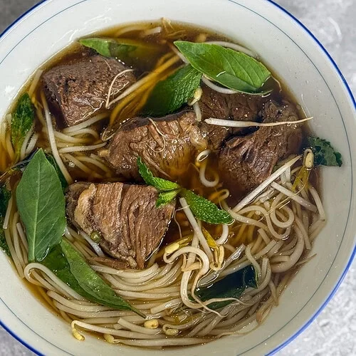

Chicken teriyaki

Sočni piščanec v sladko-slani teriyaki glazuri, postrežen z dušeno zelenjavo in puhastim rižem.
 Gostilna Zeleni Bambus
Gostilna Zeleni Bambus
V Gostilni Zeleni Bambus združujemo tradicijo slovenske gostilne z okusi Japonske, Vietnama in Tajske. Naši kuharji vsak dan pripravljajo juhe, omake in testa iz sveže zelenjave, zelišč in sezonskih sestavin z lokalnih kmetij, vse pa začinijo z azijskimi začimbami, ki jih skrbno izbiramo.
Pri nas se ne mudi nikamor. Jedi se kuhajo počasi in z ljubeznijo, kot bi jih pripravljali doma, zato vas bo ob vsakem grižljaju spremljal občutek toplote, ki ga poznate iz babičine kuhinje, le da z drugega konca sveta. Pridite sami, z družino ali s prijatelji, za mizo vedno najdemo prostor.
Sočni piščanec v sladko-slani teriyaki glazuri, postrežen z dušeno zelenjavo in puhastim rižem.

Aromatična goveja juha z rižnimi rezanci, tankimi rezinami govedi, svežo baziliko, koriandrom in limeto.

Lahka in kremasta sladica iz mascarponeja, piškotov in svežih jagod, ki se ji težko upre kdorkoli.